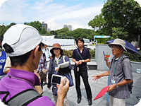

｢2012ピースアクション in ヒロシマ・ナガサキ｣ 報告
｢核兵器の廃絶と戦争のない平和な世界｣を願って、8月4日から9日まで日本生協連の「ピースアクションinヒロシマ・ナガサキ」が行われました。ヒロシマ行動にさいたまコープ11人、医療生協さいたま53人、埼玉県生協連1人、ナガサキ行動に埼玉県生協連1人が参加しました。
■「ヒロシマ行動」8月4日～6日
| 4日 | 「フィールドワーク」広島城コース |
広島城は、原子爆弾投下により天守閣倒壊、門・櫓を焼失し、1958年3月に再建されました。城内では、被爆して再び芽を吹いた被爆樹木のクロガネモチの木、被爆した石垣、大本営後、防空作戦室(地下式通信室)跡を見学しました。被爆時、中国軍管区動員学徒として、比治山高等女学校生徒150人(三交代)が防衛通信に携わっていて、生徒・職員75名が悲業の最後を遂げたそうです。
| 5日 | 「フィールドワーク」白神社・袋町小学校コース |
最初に、平和大通りを挟んだ｢市立高女慰霊碑｣の前に立ちました。その後、白神社、被爆遺構である旧日本銀行広島支店、袋町小学校を見学。袋町小学校は、モダンな鉄筋コンクリート構造の建物でしたが、一部外郭のみを残し児童、教職員160名が死亡、被災直後から避難・救護所となり、壁に残された被爆者の消息を伝える文字があります。
| 5日 | ｢2012ヒロシマ虹のひろば｣広島県立総合体育館(参加者1,000人) |
主催者を代表して日本生協連芳賀唯史専務理事が挨拶。日本生協連理事会の｢原子力発電に頼らないエネルギー政策への転換｣の提言にふれ、草の根の動きにしていくよう訴えました。松井一實広島市長は、来年度、平和市長会議が広島で予定されるなか、平和の実現に向け、決意を新たにと話されました。被爆の証言では、坪井直さん(広島県被団協理事長)が、爆心から約1キロメートルの地点で被爆されたご自身の体験と、戦後の活動、平和への思いを話されました。
| 6日 | ｢広島市原爆死没者慰霊式並びに平和祈念式｣ |
午前8時から開催され、5万人が参列しました。松井一實広島市長は、平和宣言のなかで、安全なエネルギー政策を一刻も早く確立すること、被爆後に襲った高線量の｢黒い雨降雨地域｣の拡大に向けた政治判断を国に求めました。
|  |
| 6日 | 「フィールドワーク」平和記念公園内コース |
被爆の翌年、強い生命力で新芽を出して、被爆した市民の励ましとなった被爆アオギリは、旧広島逓信局の中庭にあったものを移したそうです。国立広島原爆死没者追悼平和祈念館では、建設時出土した被爆瓦、地層標本も展示。平和記念公園そのものが、被爆した当時の地表面をほぼそのままに、その上に盛土されています。
■「ナガサキ行動」8月7日～9日
| 7日 | 佐世保基地めぐりと浦頭(うらがしら)引き揚げ記念平和公園 |
時津港より約70人の参加で船を一台チャーター。大村湾の生い立ちや漁業について漁協の方から船内で説明を受けながら、浦頭引き揚げ記念平和公園に到着。第二次世界大戦後、外地から約140万人の日本人が引き揚げてきたとの説明を受けました。再度船に乗り、佐世保基地を海上から視察。日清・日露・日中・太平洋の戦争に深く関わってきたこと、1950年の｢平和都市宣言｣直後に朝鮮戦争が勃発し、再度、基地の街として生きていくことを余儀なくされていることなどの説明を受けました。
| 8日 | 「生協平和のまち歩き」～旧長崎医大から山王神社コース～ |
長崎原爆資料館前に集合。隣接する平和祈念館では｢爆心から300m以内は一瞬で死亡したため正確な人数の把握が不可能なことから白い名簿がある｣とのこと。追悼空間前室には｢70,000人±10,000人｣の記述も。旧長崎医大正門門柱などを見学しながら山王神社の二の鳥居(一本柱鳥居)を見学。柱の寄進者の記述が熱線を受けた面は消えていること、柱の無い方から一本柱鳥居を見ると爆風で向きが変わっていること。爆心地から1キロ以内にあり一度枯れながらも2年後に再び芽を吹き大きな希望を与えた境内の大クスの木などを見学しました。
| 8日 | 「2012ナガサキ虹のひろば」～長崎市民公会堂(33生協、参加約500人) |
日本生協連会長による主催者あいさつに続いて、田上長崎市長より｢昨年は核兵器の非人道性を知っていただくためにジュネーブ国連欧州本部で原爆展の常設展を実現｣できたことなどに触れごあいさつをいただきました。元長崎大学学長の土山秀夫さんから講演をいただき｢核不拡散条約(NPT)を超えた新たな枠組みの一つとして核兵器禁止条約(NWC)の締結が求められていること、長崎大学に念願の核兵器廃絶研究センター(RECNA)が開設されたこと｣などが強調されました。新しい原爆体験伝承として｢長崎原爆秘話・ふりそでの少女｣の｢音楽とおなはし｣が ソプラノ･ピアノ･チェロの演奏とピースチャイルドながさき&劇団TABIHAKUにより上演されました。
| 9日 | 「被爆67周年 長崎原爆犠牲者慰霊平和祈念式典」 |
被爆者で構成する合唱団の｢もう二度と｣の合唱で式典は始められました。はじめに「原爆死没者名奉安」が行なわれ本年8月9日現在の原爆死没者名簿登録者数は158,754人であることが報告されました。｢私たち長崎市民は、あの日の想像を絶する非人道的行為が、人類の上に二度と繰り返されてはならないとの固い決意から、核兵器廃絶と世界恒久平和を訴え続けてきた｣｢核兵器は非人道的兵器として明確に禁止すべき｣｢核兵器禁止条約(NWC)の締結に向けて一歩を踏み出すべき｣｢福島で放射能の不安に脅える日々が今も続いていることに長崎市民はこれからも福島に寄添い応援し続ける｣ことなどが式辞と長崎平和宣言で訴えられました。